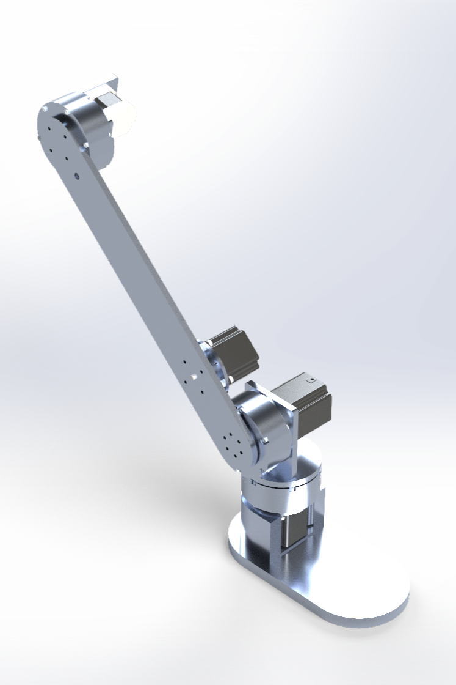

6-DOF Robotic Arm

Develop and bring up a 6-DOF Robotic capable of doing the following:
- Precise movement and full manipulation of any object (6 DOFS)
- Capable of handling a payload above 2 kg
- Use custom cycloidal actuators to achieve its strength
- Use an efficient inverse kinematics algorithm (DH parameters)
Current State: The CAD is currently being developed, along with the actuators and gripper.